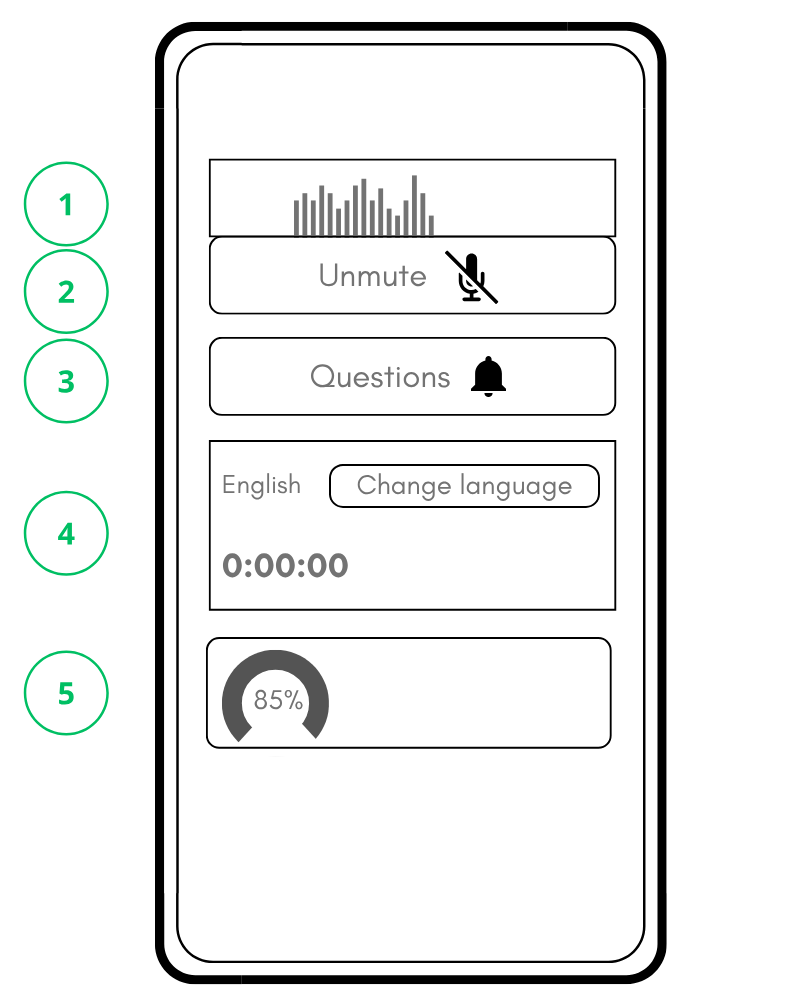
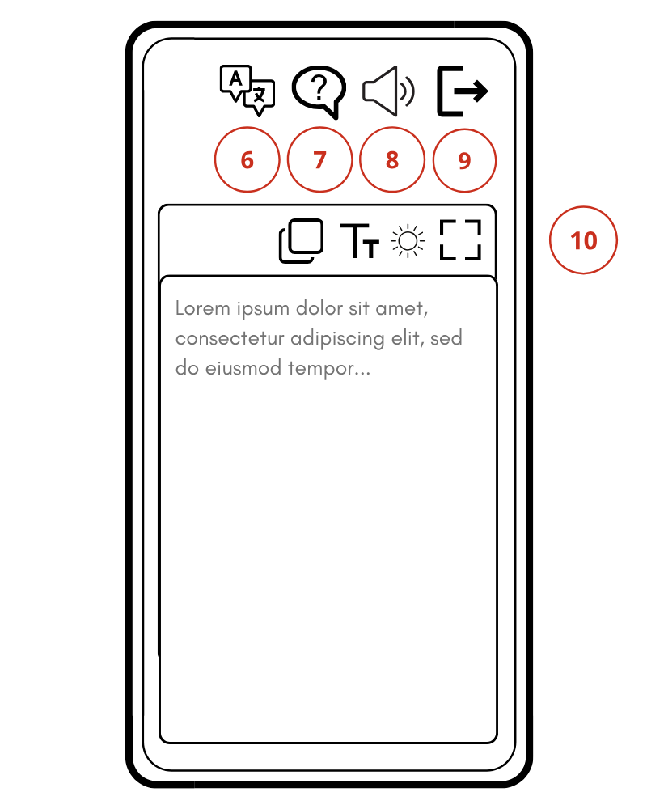

Το Nubart TRANSLATE απαιτεί:
Η συσκευή του ομιλητή πρέπει να υποστηρίζει ασφαλείς συνδέσεις WebSocket (πρωτόκολλο WSS). Τα περισσότερα σύγχρονα δίκτυα το υποστηρίζουν, αλλά ορισμένα εταιρικά/δημόσια δίκτυα Wi-Fi τις αποκλείουν.
| Μέγεθος εκδήλωσης | Απαιτούμενη ταχύτητα |
|---|---|
| Μικρή (έως 50 χρήστες) | 25 Mbps |
| Μεσαία (50-200 χρήστες) | 100 Mbps |
| Μεγάλη (200+ χρήστες) | 500 Mbps+ |
Βεβαιωθείτε ότι ο δρομολογητής υποστηρίζει πολλές ταυτόχρονες συνδέσεις.
Κατά την αγορά, ζητάμε:
Τι κάνουμε με αυτά τα υλικά:
Το πρόβλημα: Το Nubart TRANSLATE είναι ιδιαίτερα ευαίσθητο στην καταγραφή ομιλίας σε μεγάλους/θορυβώδεις χώρους. Αυτό σημαίνει ότι καταγράφει ΟΛΟ τον ήχο, συμπεριλαμβανομένου του μεταφρασμένου ήχου από τις συσκευές των ακροατών.
Δεν χρησιμοποιούμε φίλτρα θορύβου (θα έκοβε την ομιλία και θα μείωνε την ακρίβεια).
Λύση: Επιτύχετε ΕΝΑ από τα εξής:
Συνιστάται:
Πριν από την εκδήλωση: Επανεκκινήστε τη συσκευή ηχείου για να κλείσετε τις διαδικασίες στο παρασκήνιο.
Καλύτερη προς χειρότερη ποιότητα:
| Σύμπτωμα | Αιτία |
|---|---|
| Δεν υπάρχει κίνηση κατά την ομιλία | Το μικρόφωνο δεν είναι ενεργό ή είναι λάθος συσκευή |
| Πολύ μικρή κίνηση | Το σήμα είναι πολύ αδύναμο, αυξήστε την ένταση |
| Κόκκινες γραμμές σε όλες τις συχνότητες | Το συνολικό σήμα είναι πολύ ισχυρό, μειώστε την ένταση εισόδου |
| Κόκκινες γραμμές μόνο σε συγκεκριμένες συχνότητες | Χρησιμοποιήστε τον ισοσταθμιστή για να μειώσετε αυτές τις συχνότητες (η μείωση της συνολικής έντασης μπορεί να αποδυναμώσει το σήμα για τη μεταγραφή) |
🟢 Πράσινο (80%+) - Καλή ποιότητα
🟡 Κίτρινο (60-80%) - Χρησιμοποιήσιμο, βελτιώστε αν είναι δυνατόν
🔴 Κόκκινο (κάτω από 60%) - Κακή ποιότητα
Εάν ο δείκτης είναι κόκκινος:
Επανεκκινήστε τη συσκευή του ομιλητή για βέλτιστη απόδοση.
Επιλέξτε τη γλώσσα που θα μιλήσετε κατά τη διάρκεια της παρουσίασης.
Καθώς μιλάτε, ελέγχετε τους εξής δείκτες:
Εάν κάποιος δείκτης είναι προβληματικός:
Όταν ο ακροατής υποβάλλει ερώτηση:


Πατήστε "Αποσύνδεση" (9) για να βγείτε από τη μετάφραση.
5 λεπτά δοκιμών αποτρέπουν ώρες κακής μετάφρασης.
Οι διοργανωτές εκδηλώσεων συχνά παραλείπουν τις δοκιμές επειδή:
Η δοκιμή αποκαλύπτει:
Εκτελέστε αυτή τη δοκιμή 5 λεπτών στον πραγματικό χώρο, υπό πραγματικές συνθήκες εκδήλωσης, πριν από την έναρξη της εκδήλωσής σας.
Στη συσκευή ηχείου:
🟢 ΠΡΑΣΙΝΟ - Τέλεια! Συνεχίστε.
🟡 ΚΙΤΡΙΝΟ - Βελτιώστε αν είναι δυνατόν
🔴 ΚΟΚΚΙΝΟ - Πρέπει να βελτιωθεί
Πρέπει να εμφανίζεται ΠΡΑΣΙΝΟ χρώμα κατά την ομιλία.
Στη δεύτερη συσκευή (προβολή ακροατή):
Διαβάστε τη ζωντανή μεταγραφή στη γλώσσα σας. Συγκρίνετε τις προφορικές λέξεις με το κείμενο που εμφανίζεται.
| Πρόβλημα | Λύση |
|---|---|
| Κόκκινος ή κίτρινος δείκτης ποιότητας |
|
| Μεταγραφή κάτω από 90% |
|
| Κόκκινες γραμμές στην οθόνη φάσματος |
|
| Η οθόνη φάσματος (1) κινείται ελάχιστα |
|
| Λανθασμένη συσκευή εισόδου |
|
Είστε έτοιμοι να ξεκινήσετε τη ζωντανή μετάδοση όταν:
Σύμπτωμα: Η μεταγραφή περιλαμβάνει λέξεις που ο ομιλητής δεν είπε
Αιτία: Το μικρόφωνο συλλαμβάνει συνομιλίες που γίνονται κοντά
Λύση: Χρησιμοποιήστε μικρόφωνο κοντινής απόστασης (λαβαλιέ/ακουστικά), τοποθετήστε τον ομιλητή μακριά από το κοινό
Σύμπτωμα: Η μετάφραση επαναλαμβάνεται ή κολλάει
Αιτία: Το μικρόφωνο του ομιλητή λαμβάνει τον μεταφρασμένο ήχο από τις συσκευές των ακροατών
Λύση: Όλοι οι ακροατές να χρησιμοποιούν ακουστικά ή να αυξήσουν την απόσταση μεταξύ των συσκευών
Σύμπτωμα: Κόκκινος δείκτης ποιότητας, παράλογη μεταγραφή
Αιτία: Επιλογή λανθασμένης γλώσσας ομιλίας (η κύρια αιτία αποτυχίας των δοκιμών)
Λύση: Κάντε κλικ στην επιλογή «Αλλαγή γλώσσας» (4) και επιλέξτε τη σωστή γλώσσα
Σύμπτωμα: Η οθόνη φάσματος (1) κινείται ελάχιστα Ή εμφανίζει κόκκινες γραμμές
Αιτία: Λανθασμένη ρύθμιση της έντασης εισόδου
Λύση: Ρυθμίστε την ένταση εισόδου στις ρυθμίσεις του λειτουργικού συστήματος/του προγράμματος περιήγησης ή ρυθμίστε τη φυσική απόσταση από το μικρόφωνο
Ιδανική στιγμή:
Εκτελέστε τη δοκιμή εισόδου ήχου (βλ. ενότητα Δοκιμές) για να ελέγξετε την ακρίβεια της μεταγραφής.
Λύση: Κάντε κλικ στην επιλογή «Αλλαγή γλώσσας» (4) και επιλέξτε τη σωστή γλώσσα
| Σύμπτωμα | Λύση |
|---|---|
| Η οθόνη φάσματος (1) εμφανίζει αδύναμο/καθόλου σήμα | Αυξήστε την ένταση της εισόδου |
| Η οθόνη φάσματος (1) εμφανίζει κόκκινες γραμμές | Μειώστε την ένταση της εισόδου |
| Θόρυβος/ηχώ στο παρασκήνιο | Χρησιμοποιήστε καλύτερο μικρόφωνο, μειώστε τον θόρυβο του δωματίου |
| Καταγράφονται άλλες φωνές | Βεβαιωθείτε ότι μόνο η φωνή του ομιλητή φτάνει στο μικρόφωνο |
Το μικρόφωνο του ομιλητή ακούει την μεταφρασμένη έξοδο ήχου.
Κατά τη διάρκεια της δοκιμής, οι συσκευές ενός ατόμου βρίσκονται πολύ κοντά μεταξύ τους.
Έως 2 δευτερόλεπτα μετά την ολοκλήρωση μιας πρότασης από τον ομιλητή είναι φυσιολογικό (όπως και στους ανθρώπινους διερμηνείς).
Email: info@nubart.eu
Για απομακρυσμένους ομιλητές, μεταφέρετε τον ήχο του Zoom/Meet από τη συσκευή Α στο Nubart στη συσκευή Β μέσω καλωδίου TRRS. Δοκιμάστε αυτή τη ρύθμιση μερικές ημέρες νωρίτερα. Για τεχνικές λεπτομέρειες και οδηγίες ρύθμισης, ανατρέξτε στις Συχνές Ερωτήσεις στον ιστότοπό μας.
Ενημερώστε μας για:
Κάθε αίθουσα απαιτεί ξεχωριστό λογαριασμό ομιλητή με διαφορετικό email:
Σημείωση: Χρειάζεστε δικαιώματα «διαχειριστή» για να έχετε πρόσβαση στην καρτέλα «Υπάλληλοι». Επικοινωνήστε μαζί μας αν δεν βλέπετε αυτήν την επιλογή.
Παράδειγμα: Ο φορητός υπολογιστής που είναι συνδεδεμένος στο ηχοσύστημα βρίσκεται σε καμπίνα ή στο πίσω μέρος της αίθουσας, αλλά ο ομιλητής βρίσκεται στη σκηνή.
Ο ομιλητής δεν μπορεί να δει τις ερωτήσεις του κοινού.
Βήματα ρύθμισης:
Τι βλέπει ο ομιλητής στη δεύτερη συσκευή:
Τι μπορεί να κάνει ο ομιλητής:
Ευθύνες της κύριας συσκευής (τεχνικός ήχου στο θάλαμο):
Επιλογή 1: Ένας λογαριασμός ομιλητή (η πιο απλή)
Επιλογή 2: Λογαριασμοί πολλαπλών ομιλητών
Κάθε ομιλητής ΠΡΕΠΕΙ:
Δημιουργήστε έναν απλό οδηγό μιας σελίδας για τους ομιλητές που να καλύπτει:
Εξετάστε το ενδεχόμενο να τον παρέχετε σε πολλές γλώσσες για τους διεθνείς ομιλητές.
Πολλαπλές γλώσσες: Εάν πρέπει να προβάλλετε ταυτόχρονα πολλαπλές μεταφράσεις, ανοίξτε τον σύνδεσμο QR code σε ξεχωριστά παράθυρα/καρτέλες του προγράμματος περιήγησης, το καθένα ρυθμισμένο σε διαφορετική γλώσσα.
Το Nubart TRANSLATE παρέχει επαγγελματικής ποιότητας ταυτόχρονη διερμηνεία συγκρίσιμη με αυτή έμπειρων διερμηνέων (ακρίβεια 85-95%).
| Μετάφραση εγγράφων (DeepL, ChatGPT) |
Συγχρόνιστη διερμηνεία (Nubart TRANSLATE) |
|---|---|
| Πλήρη κείμενα, γνωρίζει το τέλος των προτάσεων | Ζωντανή, δεν γνωρίζει πώς συνεχίζεται η πρόταση |
| Τέλεια εισαγωγή κειμένου | Πρέπει πρώτα να μεταγραφεί η ομιλία (προφορές, θόρυβος) |
| Χωρίς πίεση χρόνου | Απαιτείται άμεση παράδοση |
| Πλεονεκτήματα της τεχνητής νοημοσύνης | Προκλήσεις της τεχνητής νοημοσύνης |
|---|---|
| ✅ Υπεράνθρωπη μνήμη (ορολογία, αριθμοί) | ❌ Διαχωρισμός φωνής στο παρασκήνιο |
| ✅ Ποτέ δεν κουράζεται | ❌ Υπερβολική ακρίβεια (αναπαράγει λάθη) |
| ✅ Άμεση διαθεσιμότητα | ❌ Τοποθέτηση σημείων στίξης |
| ✅ Απεριόριστη επεκτασιμότητα | ❌ Δεν εξομαλύνει την ομιλία |
| ✅ Μικρό κόστος | ❌ Ανάμειξη γλωσσών (αλλαγή κώδικα) |
| ❌ Προφορά ξένων ονομάτων (TTS) |
Σενάριο: Ομιλητής γερμανικής γλώσσας χρησιμοποιεί αγγλικούς όρους («customer journey», «machine learning»).
Πρόβλημα: Η τεχνητή νοημοσύνη που έχει ρυθμιστεί στα γερμανικά δεν γνωρίζει αν πρόκειται για δάνεια (να παραμείνουν στα αγγλικά) ή αν χρειάζονται μετάφραση.
Λύση: Εάν γνωρίζετε ότι οι ομιλητές θα χρησιμοποιήσουν συγκεκριμένους αγγλικούς όρους, αναφέρετέ τους στα έγγραφα του πλαισίου σας. Ζητήστε από τους ομιλητές να είναι συνεπείς. Χρησιμοποιήστε το κουμπί «Αλλαγή γλώσσας» για ολόκληρες ενότητες.
Παράδειγμα: Γερμανικά «Fraunhofer» → Κείμενο ✅ σωστό → Αγγλική φωνή TTS ❌ «Frown-hoffer»
Μπορεί να επηρεάσει: Ονόματα εταιρειών (BMW, Siemens), άτομα (François, Müller), τόπους (München, København)
Γιατί: Το TTS χρησιμοποιεί τους φωνητικούς κανόνες της γλώσσας-στόχου και δεν αλλάζει αυτόματα για ξένα ονόματα.
Λύση: Ενημερώστε τους ακροατές ότι το κείμενο είναι ακριβές. Προτείνετε τη λειτουργία μόνο κειμένου για εκδηλώσεις με πολλά ξένα ονόματα.
| Παράγοντας | Επίδραση |
|---|---|
| Καθαρότητα/ένταση ήχου | 🔴 Υψηλή |
| Περιβαλλοντικός θόρυβος | 🔴 Υψηλός |
| Ακουστική χώρου | 🔴 Υψηλή |
| Ρυθμός/αρθρωτικότητα ομιλητή | 🟡 Μέτριο |
| Ποιότητα διαδικτύου | 🟡 Μέτρια |
| Προφορά ομιλητή | 🟡 Χαμηλή-μέτρια |
Σημείωση: Οι ανθρώπινοι διερμηνείς επίσης αντιμετωπίζουν δυσκολίες σε αυτά τα σενάρια — δεν είναι κάτι που αφορά αποκλειστικά την τεχνητή νοημοσύνη.
Επικοινωνήστε στα προ-εκδηλωτικά υλικά:
Μην υποσχεθείτε:
Η τεχνολογία έχει εκδημοκρατίσει την επαγγελματική διερμηνεία. Εκδηλώσεις οποιουδήποτε μεγέθους μπορούν να προσφέρουν πολυγλωσσική πρόσβαση σε ένα κλάσμα του παραδοσιακού κόστους.
Η τεχνητή νοημοσύνη βελτιώνεται ραγδαία:
info@nubart.eu
Στόχος μας είναι να κάνουμε την πολυγλωσσική εκδήλωσή σας επιτυχημένη. Έχουμε εργαστεί σκληρά για να δημιουργήσουμε ένα σύστημα που είναι τόσο ισχυρό όσο και εύκολο στη χρήση.
Να θυμάστε:
Nubart TRANSLATE
Διερμηνεία σε πραγματικό χρόνο με τεχνητή νοημοσύνη για εκδηλώσεις
www.nubart.eu | info@nubart.eu